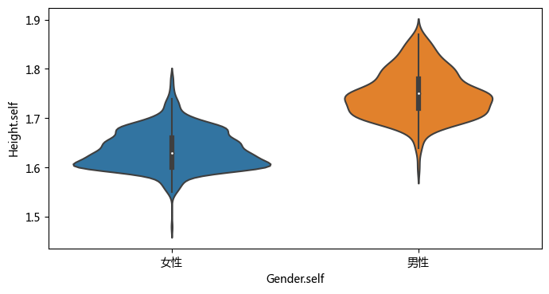

案例：《转角遇到爱》背后的数据¶
数据新闻的另一种视角与实现——《转角遇到爱》作品分析 #43
作品链接：https://h5.thepaper.cn/html/zt/2018/08/seekinglove/index.html
简介：获得2018年SND（美国新闻媒体视觉设计协会）最佳数字设计铜奖。选一个晴天的周日，从上海人民广场地铁站9号口出门，左手边就是闻名全国的人民广场相亲角。五六十岁模样的大叔大妈们带着伞和小板凳，在这里为他们的晚辈寻觅一份姻缘。澎湃新闻 www.thepaper.cn 和姐妹英文媒体“第六声”的数据记者花费了六个周末的时间，收集了874份相亲广告。从中可以读出关于618位女士和256位男士的觅爱故事。
解读：https://github.com/data-journalism/data-journalism.github.io/discussions/43
import pandas as pd
import numpy as np
import seaborn as sns
import pylab as plt
plt.rcParams['font.sans-serif'] = ['Microsoft YaHei'] # 用来正常显示中文标签
plt.rcParams['axes.unicode_minus'] = False # 用来正常显示负号, 注意['SimHei']对应这句不行.
ls './data/'
MPs' expenses claims, Jul-Dec, 2009.xlsx
data.js*
db_new.csv
df = pd.read_csv('./data/db_new.csv')
df.head()
| id | Gender.self | Year.self | Born.self | Hukou.self | Live.self | Marriage.self | Height.self | Weight.self | Looking.self | ... | Hobby.wanted | Edu.min.wanted | Edu.min.n.wanted | Job.wanted | Salary.min.wanted | Apt.wanted | Family.wanted | Other.wanted | interesting.wanted | Similar.wanted | |
|---|---|---|---|---|---|---|---|---|---|---|---|---|---|---|---|---|---|---|---|---|---|
| 0 | 1 | 女性 | 1987 | N | N | N | N | 1.65 | N | 皮肤白，大眼睛 | ... | 无不良嗜好 | N | N | 稳定 | N | 有婚房 | N | 81年不考虑。家境较好，有独立婚房。靠近长宁区 | 81年不考虑 | N |
| 1 | 2 | 男性 | 1983 | 浙江 | 有上海户口 | N | N | 1.83 | N | N | ... | N | 本科 | 4 | N | N | 要有婚房 | 单亲家庭勿扰 | 89年不要，独生女，家庭条件相当 | 89年不要 | Y |
| 2 | 3 | 男性 | 1970 | 上海 | 有上海户口 | N | 单身 | 1.75 | N | N | ... | N | N | N | 白领工作 | N | N | N | 条件相当 | 白领工作 | Y |
| 3 | 4 | 男性 | 1983 | 上海 | 有上海户口 | 上海 | N | 1.8 | N | N | ... | N | 本科 | 4 | 稳定工作 | N | N | N | N | 本分 | N |
| 4 | 5 | 女性 | 1988 | 上海 | 有上海户口 | 上海 | N | 1.69 | N | 清纯、秀丽、有气质 | ... | 不抽烟 | 本科 | 4 | N | N | N | N | 条件相当 | 不抽烟 | Y |
5 rows × 43 columns
len(df)
874
df.describe()
| id | Year.self | |
|---|---|---|
| count | 874.000000 | 874.000000 |
| mean | 438.929062 | 1982.425629 |
| std | 253.149643 | 7.339553 |
| min | 1.000000 | 1945.000000 |
| 25% | 219.500000 | 1980.000000 |
| 50% | 439.500000 | 1984.000000 |
| 75% | 657.750000 | 1987.000000 |
| max | 876.000000 | 1995.000000 |
df.columns
Index(['id', 'Gender.self', 'Year.self', 'Born.self', 'Hukou.self',
'Live.self', 'Marriage.self', 'Height.self', 'Weight.self',
'Looking.self', 'Personality.self', 'Edu.self', 'Eduno.self',
'top.self', 'Abroad.self', 'Major.self', 'Job.self', 'Salary.self',
'Apt.self', 'Family.self', 'Hobby.self', 'Other.self',
'interesting.self', 'Gender.wanted', 'Year.max.wanted',
'Year.min.wanted', 'Year.text.wanted', 'Hukou.wanted', 'Live.wanted',
'Marriage.wanted', 'Height.min.wanted', 'Looking.wanted',
'Personality.wanted', 'Hobby.wanted', 'Edu.min.wanted',
'Edu.min.n.wanted', 'Job.wanted', 'Salary.min.wanted', 'Apt.wanted',
'Family.wanted', 'Other.wanted', 'interesting.wanted',
'Similar.wanted'],
dtype='object')
df['Age'] = 2018 - df['Year.self']
plt.figure(figsize =(8, 4), dpi = 100)
sns.histplot(
df,
x="Age", hue="Gender.self",
edgecolor=".3",
linewidth=.5,
log_scale=True,
);

# https://seaborn.pydata.org/generated/seaborn.violinplot.html#seaborn.violinplot
plt.figure(figsize =(8, 4), dpi = 100)
sns.violinplot(x="Gender.self", y="Age", data=df);

# deal with missing data
df['Height.self'] = [float(i) if i != 'N' else np.nan for i in df['Height.self']]
plt.figure(figsize =(8, 4), dpi = 100)
sns.violinplot(x="Gender.self", y="Height.self", data=df);

df['Hukou.self'].unique()
array(['N', '有上海户口', '没有上海户口'], dtype=object)
df['Hukou.self'].value_counts()
有上海户口 421
N 409
没有上海户口 44
Name: Hukou.self, dtype: int64
df['Looking.self'].value_counts()
N 628
气质佳 14
帅气 9
貌佳清秀 8
清秀 6
...
肤白、身材好 1
帅 1
品貌端庄 1
形象好、气质佳 1
英俊帅气 1
Name: Looking.self, Length: 159, dtype: int64
df['Personality.self']
0 N
1 N
2 N
3 N
4 善良、进取、阳光、有责任心
...
869 N
870 性格文静、善良贤惠、老实本分
871 N
872 善良
873 开朗、稳重、有责任心
Name: Personality.self, Length: 874, dtype: object
df['Edu.self'].value_counts()
本科 373
研究生 272
N 120
大专 81
博士 14
中专 7
高中 6
初中 1
Name: Edu.self, dtype: int64
df['Eduno.self'].value_counts()
4 373
5 272
N 120
3 81
6 14
1 7
2 6
0 1
Name: Eduno.self, dtype: int64
df['top.self'].value_counts()
N 680
重点大学毕业 194
Name: top.self, dtype: int64
df['Abroad.self'].value_counts()
N 782
Y 92
Name: Abroad.self, dtype: int64
df['Job.self'].value_counts()
N 111
外企 50
银行 31
国企 28
公务员 21
...
互联网研发 1
上海二级医院 1
制造企业进出口专员 1
外企白领 1
外资航空公司 1
Name: Job.self, Length: 466, dtype: int64
df['Major.self'].value_counts()
N 803
金融 13
会计 4
英语 3
生物化学 3
电子信息 2
计算机 2
传媒 2
财务管理 2
法学 2
财会 2
外语 2
金融数学 1
建筑学 1
工商管理 1
法学和经济 1
中医 1
播音主持 1
计算机科学 1
医学 1
电力电子 1
新闻媒体 1
金融学 1
护理 1
同声传译 1
幼儿师范学前教育 1
微电子 1
英语和会计 1
认证检测 1
经贸外语 1
政法 1
金融统计 1
电气自动化、工商管理 1
数据分析 1
生物 1
数理统计 1
绘画，设计 1
中文 1
药剂 1
通信专业 1
临床医学 1
服装设计 1
工程 1
通信工程 1
建筑 1
机电工程 1
Name: Major.self, dtype: int64
df['Salary.self'].value_counts()
N 553
120000 64
200000 46
300000 27
60000 17
96000 15
100000 14
84000 14
240000 13
180000 13
250000 12
150000 12
400000 10
72000 9
500000 9
78000 4
350000 3
1000000 3
360000 2
162000 2
48000 2
90000 2
144000 2
66000 2
108000 2
800000 2
57600 2
70000 1
6000000 1
140000 1
54000 1
1300000 1
36000 1
600000 1
700000 1
52000 1
370000 1
42000 1
450000 1
660000 1
270000 1
160000 1
156000 1
24000 1
74400 1
Name: Salary.self, dtype: int64
df['Apt.self'].value_counts()
N 461
有房 413
Name: Apt.self, dtype: int64
df['Family.self'].value_counts()
N 635
父母退休 36
父母已退休 9
家境好 8
知识分子家庭 8
...
父母退休、家庭和睦 1
知识分子家庭出身 1
父亲在政法部门工作，母亲是教师 1
父亲母亲已退休 1
纯朴家风，父母均为事业单位退休 1
Name: Family.self, Length: 149, dtype: int64
df['Hobby.self'].value_counts()
N 775
无不良嗜好 24
烟酒不沾 9
爱国画 3
兴趣爱好广泛 2
...
爱健身、游泳、做饭 1
无烟酒不良嗜好 1
钢琴十级，擅长中英文演讲 1
爱好书法、古筝 1
钢琴八级 1
Name: Hobby.self, Length: 61, dtype: int64
df['Other.self'].value_counts()
N 286
备有婚房 158
独生女 23
家境好 11
独生女。备有婚房 10
...
爱清洁。名下有1000万房产 1
三个专业毕业 1
独生子 1
有四套房车 1
独生女，闵行有房，无贷 1
Name: Other.self, Length: 323, dtype: int64
df['interesting.self'].value_counts()
N 634
无同居史 4
自己创业 3
有绿卡 3
高知家庭 3
...
稳重大方 1
活泼文静 1
外语10级 1
肤白 1
明年毕业 1
Name: interesting.self, Length: 215, dtype: int64
df['Live.self'].value_counts()
N 781
上海 51
美国 12
澳大利亚悉尼 5
澳大利亚 3
德国 2
加拿大 2
日本 2
新加坡 2
加拿大多伦多 2
山东 1
浙江杭州 1
西班牙 1
英国伦敦 1
日本大阪 1
美国纽约 1
美国加州 1
西班牙巴塞罗那 1
美国芝加哥 1
加拿大温哥华 1
美国旧金山 1
江苏昆山 1
Name: Live.self, dtype: int64
df['Similar.wanted'].value_counts()
N 777
Y 97
Name: Similar.wanted, dtype: int64
df['Looking.wanted'].value_counts()
N 754
五官端正 10
清秀 10
相貌端正 5
貌佳 4
...
相貌较好 1
容貌稍好 1
气质佳、品貌优秀 1
长相好 1
靓女、甜美可爱 1
Name: Looking.wanted, Length: 71, dtype: int64
df['Hukou.wanted'].value_counts()
N 760
上海户口 97
江浙沪 15
澳大利亚悉尼 1
美国/加拿大 1
Name: Hukou.wanted, dtype: int64
df['Looking.self.dummy'] = [1 if i != 'N' else 0 for i in df['Looking.self']]
df['Looking.wanted.dummy'] = [1 if i != 'N' else 0 for i in df['Looking.wanted']]
df['Personality.self.dummy'] = [1 if i != 'N' else 0 for i in df['Personality.self']]
df['Family.self.dummy'] = [1 if i != 'N' else 0 for i in df['Family.self']]
df['Hobby.self.dummy'] = [1 if i != 'N' else 0 for i in df['Hobby.self']]
df['Other.self.dummy'] = [1 if i != 'N' else 0 for i in df['Other.self']]
df['interesting.self.dummy'] = [1 if i != 'N' else 0 for i in df['interesting.self']]
df['Hukou.wanted.dummy'] = [1 if i != 'N' else 0 for i in df['Hukou.wanted']]
['id', 'Gender.self', 'Year.self', 'Born.self', 'Hukou.self',
'Live.self', 'Marriage.self', 'Height.self', 'Weight.self',
'Looking.self', 'Personality.self', 'Edu.self', 'Eduno.self',
'top.self', 'Abroad.self', 'Major.self', 'Job.self', 'Salary.self',
'Apt.self', 'Family.self', 'Hobby.self', 'Other.self',
'interesting.self', 'Gender.wanted', 'Year.max.wanted',
'Year.min.wanted', 'Year.text.wanted', 'Hukou.wanted', 'Live.wanted',
'Marriage.wanted', 'Height.min.wanted', 'Looking.wanted',
'Personality.wanted', 'Hobby.wanted', 'Edu.min.wanted',
'Edu.min.n.wanted', 'Job.wanted', 'Salary.min.wanted', 'Apt.wanted',
'Family.wanted', 'Other.wanted', 'interesting.wanted',
'Similar.wanted']
['id',
'Gender.self',
'Year.self',
'Born.self',
'Hukou.self',
'Live.self',
'Marriage.self',
'Height.self',
'Weight.self',
'Looking.self',
'Personality.self',
'Edu.self',
'Eduno.self',
'top.self',
'Abroad.self',
'Major.self',
'Job.self',
'Salary.self',
'Apt.self',
'Family.self',
'Hobby.self',
'Other.self',
'interesting.self',
'Gender.wanted',
'Year.max.wanted',
'Year.min.wanted',
'Year.text.wanted',
'Hukou.wanted',
'Live.wanted',
'Marriage.wanted',
'Height.min.wanted',
'Looking.wanted',
'Personality.wanted',
'Hobby.wanted',
'Edu.min.wanted',
'Edu.min.n.wanted',
'Job.wanted',
'Salary.min.wanted',
'Apt.wanted',
'Family.wanted',
'Other.wanted',
'interesting.wanted',
'Similar.wanted']
列联表分析¶
pd.crosstab(df['Gender.self'],df['Looking.self.dummy'],margins=True)
| Looking.self.dummy | 0 | 1 | All |
|---|---|---|---|
| Gender.self | |||
| 女性 | 406 | 212 | 618 |
| 男性 | 222 | 34 | 256 |
| All | 628 | 246 | 874 |
pd.crosstab(df['Gender.self'],df['Looking.self.dummy'],margins=True, normalize='index')
| Looking.self.dummy | 0 | 1 |
|---|---|---|
| Gender.self | ||
| 女性 | 0.656958 | 0.343042 |
| 男性 | 0.867188 | 0.132812 |
| All | 0.718535 | 0.281465 |
import numpy as np
from scipy import stats
alist = np.array(pd.crosstab(df['Gender.self'],df['Looking.self.dummy'],margins=False)).tolist()
print(alist)
# 卡方检验
chi2, p, ddof, expected = stats.chi2_contingency( alist )
msg = "Test Statistic: {}\n p-value: {}\n Degrees of Freedom: {}\n"
print( msg.format( chi2, p, ddof ) )
print( expected )
[[406, 212], [222, 34]]
Test Statistic: 38.525189790079125
p-value: 5.405153041255414e-10
Degrees of Freedom: 1
[[444.05491991 173.94508009]
[183.94508009 72.05491991]]
pd.crosstab(df['Gender.self'],df['Personality.self.dummy'],margins=True)
| Personality.self.dummy | 0 | 1 | All |
|---|---|---|---|
| Gender.self | |||
| 女性 | 371 | 247 | 618 |
| 男性 | 173 | 83 | 256 |
| All | 544 | 330 | 874 |
pd.crosstab(df['Gender.self'],df['Personality.self.dummy'],margins=True, normalize='index')
| Personality.self.dummy | 0 | 1 |
|---|---|---|
| Gender.self | ||
| 女性 | 0.600324 | 0.399676 |
| 男性 | 0.675781 | 0.324219 |
| All | 0.622426 | 0.377574 |
alist = np.array(pd.crosstab(df['Gender.self'],df['Personality.self.dummy'],margins=False)).tolist()
print(alist)
# 卡方检验
chi2, p, ddof, expected = stats.chi2_contingency( alist )
msg = "Test Statistic: {}\n p-value: {}\n Degrees of Freedom: {}\n"
print( msg.format( chi2, p, ddof ) )
print( expected )
[[371, 247], [173, 83]]
Test Statistic: 4.070440019813376
p-value: 0.04363990497274837
Degrees of Freedom: 1
[[384.6590389 233.3409611]
[159.3409611 96.6590389]]
pd.crosstab(df['Gender.self'],df['Edu.self'],margins=True)
| Edu.self | N | 中专 | 初中 | 博士 | 大专 | 本科 | 研究生 | 高中 | All |
|---|---|---|---|---|---|---|---|---|---|
| Gender.self | |||||||||
| 女性 | 74 | 3 | 1 | 4 | 47 | 278 | 207 | 4 | 618 |
| 男性 | 46 | 4 | 0 | 10 | 34 | 95 | 65 | 2 | 256 |
| All | 120 | 7 | 1 | 14 | 81 | 373 | 272 | 6 | 874 |
pd.crosstab(df['Gender.self'],df['Edu.self'],margins=True, normalize='index')
| Edu.self | N | 中专 | 初中 | 博士 | 大专 | 本科 | 研究生 | 高中 |
|---|---|---|---|---|---|---|---|---|
| Gender.self | ||||||||
| 女性 | 0.119741 | 0.004854 | 0.001618 | 0.006472 | 0.076052 | 0.449838 | 0.334951 | 0.006472 |
| 男性 | 0.179688 | 0.015625 | 0.000000 | 0.039062 | 0.132812 | 0.371094 | 0.253906 | 0.007812 |
| All | 0.137300 | 0.008009 | 0.001144 | 0.016018 | 0.092677 | 0.426773 | 0.311213 | 0.006865 |
alist = np.array(pd.crosstab(df['Gender.self'],df['Edu.self'],margins=False)).tolist()
print(alist)
# 卡方检验
chi2, p, ddof, expected = stats.chi2_contingency( alist )
msg = "Test Statistic: {}\n p-value: {}\n Degrees of Freedom: {}\n"
print( msg.format( chi2, p, ddof ) )
print( expected )
[[74, 3, 1, 4, 47, 278, 207, 4], [46, 4, 0, 10, 34, 95, 65, 2]]
Test Statistic: 32.566864831926054
p-value: 3.187587277414393e-05
Degrees of Freedom: 7
[[ 84.85125858 4.94965675 0.70709382 9.8993135 57.27459954
263.74599542 192.32951945 4.24256293]
[ 35.14874142 2.05034325 0.29290618 4.1006865 23.72540046
109.25400458 79.67048055 1.75743707]]
pd.crosstab(df['Gender.self'],df['Hukou.self'],margins=True)
| Hukou.self | N | 有上海户口 | 没有上海户口 | All |
|---|---|---|---|---|
| Gender.self | ||||
| 女性 | 293 | 290 | 35 | 618 |
| 男性 | 116 | 131 | 9 | 256 |
| All | 409 | 421 | 44 | 874 |
pd.crosstab(df['Gender.self'],df['Hukou.self'],margins=True, normalize = 'index')
| Hukou.self | N | 有上海户口 | 没有上海户口 |
|---|---|---|---|
| Gender.self | |||
| 女性 | 0.474110 | 0.469256 | 0.056634 |
| 男性 | 0.453125 | 0.511719 | 0.035156 |
| All | 0.467963 | 0.481693 | 0.050343 |
alist = np.array(pd.crosstab(df['Gender.self'],df['Hukou.self'],margins=False)).tolist()
print(alist)
# 卡方检验
chi2, p, ddof, expected = stats.chi2_contingency( alist )
msg = "Test Statistic: {}\n p-value: {}\n Degrees of Freedom: {}\n"
print( msg.format( chi2, p, ddof ) )
print( expected )
[[293, 290, 35], [116, 131, 9]]
Test Statistic: 2.506628461110095
p-value: 0.28555682567352375
Degrees of Freedom: 2
[[289.201373 297.68649886 31.11212815]
[119.798627 123.31350114 12.88787185]]
pd.crosstab(df['Gender.self'],df['top.self'],margins=True)
| top.self | N | 重点大学毕业 | All |
|---|---|---|---|
| Gender.self | |||
| 女性 | 470 | 148 | 618 |
| 男性 | 210 | 46 | 256 |
| All | 680 | 194 | 874 |
pd.crosstab(df['Gender.self'],df['top.self'],margins=True, normalize = 'index')
| top.self | N | 重点大学毕业 |
|---|---|---|
| Gender.self | ||
| 女性 | 0.760518 | 0.239482 |
| 男性 | 0.820312 | 0.179688 |
| All | 0.778032 | 0.221968 |
alist = np.array(pd.crosstab(df['Gender.self'],df['top.self'],margins=False)).tolist()
print(alist)
# 卡方检验
chi2, p, ddof, expected = stats.chi2_contingency( alist )
msg = "Test Statistic: {}\n p-value: {}\n Degrees of Freedom: {}\n"
print( msg.format( chi2, p, ddof ) )
print( expected )
[[470, 148], [210, 46]]
Test Statistic: 3.4093710125149688
p-value: 0.0648271518621084
Degrees of Freedom: 1
[[480.82379863 137.17620137]
[199.17620137 56.82379863]]
pd.crosstab(df['Gender.self'],df['Abroad.self'],margins=True)
| Abroad.self | N | Y | All |
|---|---|---|---|
| Gender.self | |||
| 女性 | 550 | 68 | 618 |
| 男性 | 232 | 24 | 256 |
| All | 782 | 92 | 874 |
pd.crosstab(df['Gender.self'],df['Abroad.self'],margins=True, normalize = 'index')
| Abroad.self | N | Y |
|---|---|---|
| Gender.self | ||
| 女性 | 0.889968 | 0.110032 |
| 男性 | 0.906250 | 0.093750 |
| All | 0.894737 | 0.105263 |
alist = np.array(pd.crosstab(df['Gender.self'],df['Abroad.self'],margins=False)).tolist()
print(alist)
# 卡方检验
chi2, p, ddof, expected = stats.chi2_contingency( alist )
msg = "Test Statistic: {}\n p-value: {}\n Degrees of Freedom: {}\n"
print( msg.format( chi2, p, ddof ) )
print( expected )
[[550, 68], [232, 24]]
Test Statistic: 0.351325749125499
p-value: 0.5533636134064016
Degrees of Freedom: 1
[[552.94736842 65.05263158]
[229.05263158 26.94736842]]
pd.crosstab(df['Gender.self'],df['Apt.self'],margins=True)
| Apt.self | N | 有房 | All |
|---|---|---|---|
| Gender.self | |||
| 女性 | 385 | 233 | 618 |
| 男性 | 76 | 180 | 256 |
| All | 461 | 413 | 874 |
pd.crosstab(df['Gender.self'],df['Apt.self'],margins=True, normalize = 'index')
| Apt.self | N | 有房 |
|---|---|---|
| Gender.self | ||
| 女性 | 0.622977 | 0.377023 |
| 男性 | 0.296875 | 0.703125 |
| All | 0.527460 | 0.472540 |
alist = np.array(pd.crosstab(df['Gender.self'],df['Apt.self'],margins=False)).tolist()
print(alist)
# 卡方检验
chi2, p, ddof, expected = stats.chi2_contingency( alist )
msg = "Test Statistic: {}\n p-value: {}\n Degrees of Freedom: {}\n"
print( msg.format( chi2, p, ddof ) )
print( expected )
[[385, 233], [76, 180]]
Test Statistic: 75.92908969295243
p-value: 2.9403634235931047e-18
Degrees of Freedom: 1
[[325.97025172 292.02974828]
[135.02974828 120.97025172]]
alist = np.array(pd.crosstab(df['Looking.self.dummy'],df['Looking.wanted.dummy'],margins=False)).tolist()
print(alist)
# 卡方检验
chi2, p, ddof, expected = stats.chi2_contingency( alist )
msg = "Test Statistic: {}\n p-value: {}\n Degrees of Freedom: {}\n"
print( msg.format( chi2, p, ddof ) )
print( expected )
[[549, 79], [205, 41]]
Test Statistic: 2.1596107037130725
p-value: 0.14168058143484263
Degrees of Freedom: 1
[[541.77574371 86.22425629]
[212.22425629 33.77574371]]
alist = np.array(pd.crosstab(df['Looking.self.dummy'],df['Looking.wanted.dummy'],margins=False)).tolist()
print(alist)
# 卡方检验
chi2, p, ddof, expected = stats.chi2_contingency( alist )
msg = "Test Statistic: {}\n p-value: {}\n Degrees of Freedom: {}\n"
print( msg.format( chi2, p, ddof ) )
print( expected )
[[104, 16], [5, 2], [1, 0], [10, 4], [72, 9], [318, 55], [238, 34], [6, 0]]
Test Statistic: 6.176235299193836
p-value: 0.5193287773742754
Degrees of Freedom: 7
[[1.03524027e+02 1.64759725e+01]
[6.03890160e+00 9.61098398e-01]
[8.62700229e-01 1.37299771e-01]
[1.20778032e+01 1.92219680e+00]
[6.98787185e+01 1.11212815e+01]
[3.21787185e+02 5.12128146e+01]
[2.34654462e+02 3.73455378e+01]
[5.17620137e+00 8.23798627e-01]]
介绍自己容貌者比起不介绍自己容貌的人对户口有要求更明确！¶
pd.crosstab(df['Looking.self.dummy'],df['Hukou.wanted.dummy'],margins=True, normalize = 'index')
| Hukou.wanted.dummy | 0 | 1 |
|---|---|---|
| Looking.self.dummy | ||
| 0 | 0.890127 | 0.109873 |
| 1 | 0.817073 | 0.182927 |
| All | 0.869565 | 0.130435 |
alist = np.array(pd.crosstab(df['Looking.self.dummy'],df['Hukou.wanted.dummy'],margins=False)).tolist()
print(alist)
# 卡方检验
chi2, p, ddof, expected = stats.chi2_contingency( alist )
msg = "Test Statistic: {}\n p-value: {}\n Degrees of Freedom: {}\n"
print( msg.format( chi2, p, ddof ) )
print( expected )
[[559, 69], [201, 45]]
Test Statistic: 7.6855978565757
p-value: 0.005566323672839524
Degrees of Freedom: 1
[[546.08695652 81.91304348]
[213.91304348 32.08695652]]